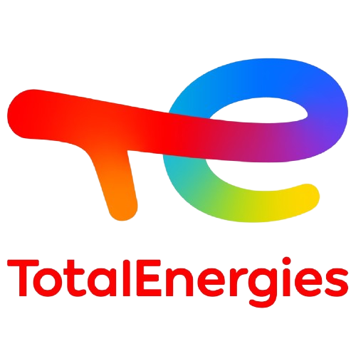
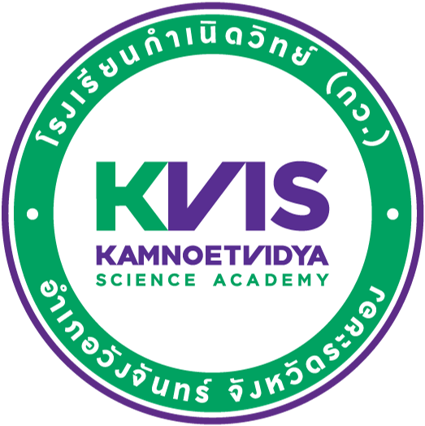

Khunakorn Limpsapapkasiphol
Digital Geoscientist


I identify myself as a passionate digital geoscientist fueled by a relentless enthusiasm to integrate cutting-edge digital technologies with my domain expertise in geosciences. Actively seeking opportunities in geosciences (e.g., mining, energy, reservoirs, RS & GIS, hydrology, geophysics, geotechnics, and environment), IT (e.g., data, ML, and software), or a blend of both.
The filter below can be used to explore my background and experiences in different fields:
Education

Imperial College London
Environmental Data Science and Machine Learning | MSc
London, UK | 09/2023 - 09/2024
Environmental Data Science and Machine Learning | MSc
London, UK | 09/2023 - 09/2024
-
Taught modules include:
- Numerical Programming in Python
- Computational Mathematics
- Data Science & Machine Learning
- Deep-Learning: Machine Learning with Neural Networks
- Environmental Data
- Inversion & Optimisation
- Advanced Programming (C++)
- Big Data Analytics
- Acquired additional knowledge of geospatial, seismic, and climatic data (in terms of underlying physical principles and data handling) from the Environmental Data module.
- Applied data science and machine learning techniques to diverse Earth and environmental datasets in individual coursework and team projects over the degree.
-
Notable team projects include:
- Making UK flood risk and impact predictions while creating data visualizations.
- Using time-series data/images of storms to predict their future images and wind speeds.
- Predicting wildfires using surrogate models together with data assimilation.
Imperial College London
Earth and Planetary Science | BSc
London, UK | 10/2020 - 06/2023
Earth and Planetary Science | BSc
London, UK | 10/2020 - 06/2023
- Focused on geophysics.
- Graduated with First-class honours (~79%); on the Engineering Dean's list (top 10%) every academic year.
-
Notable modules include:
- Pure and Applied Geophysics
- Mechanics and Waves
- Seismology and Numerical Methods
- Field Geophysics
- Near-surface Seismic Imaging
- Geophysical Inversion
- Earth Resources (non-credit)
- Hydrogeology and Fluid Flow
- Minerals Processing
- Remote Sensing Earth & Planets
- Advanced Remote Sensing
- Climate
-
Notable fieldwork experiences include:
- Geological observation, interpretation, and mapping around Cumbria, UK.
- Geophysical surveying and data processing in Cyprus.
-
Notable projects include:
- Year 1 independent project: "Seawalls — Good or Bad Shield Preventing Coastal Erosion".
- Year 2 independent project: "An Evaluation of Artificial Dispersion as the Solution to the Problem of the 2022 Rayong Oil Spill".
- The final-year independent project: "Mars2030's Landing Site: Northeast Syrtis Major".
- Programming for Geoscientists (Python): "Drainage Pattern Analysis".
- Advanced Programming (C++): "Financial Optimisation of Flotation".
Experience

TotalEnergies
Digital Geoscientist | Placement
Pau, France | 05/2024 - 11/2024
Digital Geoscientist | Placement
Pau, France | 05/2024 - 11/2024
- Completed an intensive training program in Amplitude Variation with Offsets (AVO), expanding expertise in quantitative seismic interpretation (QSI).
-
Work collaboratively in the QSI team to update the in-house software that
converts seismic anomaly interpretation by proprietary formulas into
the hydrocarbon exploration success probabilities of proposed prospects
based on the dataset of previous drilled ones, including:
- Develop machine learning models to optimise the coefficients in the formulas to boost the exploration outcome prediction performance.
- Automate the recalibration of the coefficients in the formulas for future updates of the dataset.
- Create an interactive Power BI dashboard to visualise results.
- Identify and correct the inconsistencies in the database.
RockWave
Seismic Interpreter | Part-time
Remote, UK | 03/2023 - 09/2023
Seismic Interpreter | Part-time
Remote, UK | 03/2023 - 09/2023
- Performed seabed picking in seismic sections using DUG Insight for offshore wind farm development projects.
- Consistently completed tasks ahead of schedule and passed quality control without requiring corrections.
- Developed a MERN (MongoDB + Express.js + React.js + Node.js) webpage using OpenAI's text embeddings to efficiently display relevant information on previous sick pets based on search queries.
- Performed banking data ETL (Extract, Transform, and Load) using CloverDX alongside the aid of Java.
Imperial College London
Primer Developer | Contract
London, UK | 09/2022 - 09/2022
Primer Developer | Contract
London, UK | 09/2022 - 09/2022
- Created Jupyter notebooks to embed Python coding in geoscience modules in the Department of Earth Science & Engineering (ESE): ESE's Primer.
- Resolved inconsistencies in the previous version of the primer for better organisation.
Imperial College London
Unity Developer | Contract
London, UK | 07/2022 - 08/2022
Unity Developer | Contract
London, UK | 07/2022 - 08/2022
- Collaboratively developed a VR application called MapLab in Unity with C# for teaching in the ESE department to simulate geological structures in 3D and their projections onto maps and cross-sections.
- Collaborated with learning designers to optimise the application for student learning experiences.
AG Education Ltd
Question Writer | Part-time
Remote, UK | 10/2021 - 12/2021
Question Writer | Part-time
Remote, UK | 10/2021 - 12/2021
- Produced creative quantitative reasoning questions to assist students in preparing for the University Clinical Aptitude Test (UCAT).
Imperial College London
Researcher | Internship
London, UK | 07/2021 - 08/2021
Researcher | Internship
London, UK | 07/2021 - 08/2021
- Automated the mesh modelling process for coastal oceans with coastal protection structures using PyQGIS to the maximum extent possible.

Kamnoetvidya Science Academy
Visiting Tutor | Volunteer
Rayong, Thailand | 07/2019 - 08/2019; 07/2021 - 08/2021
Visiting Tutor | Volunteer
Rayong, Thailand | 07/2019 - 08/2019; 07/2021 - 08/2021
- Organised and scheduled a camp in 2019 to assist students in preparing for the Earth Science Olympiad by teaching advanced earth science and astronomy and leading a geological field trip in Rayong.
- Being invited back to conduct tutoring sessions remotely in 2021.
Achievements
- Semi-finalist, ClimateScience Olympiad [2023]
- Engineering Dean's list [2021, 2022, 2023] — nominated to the top 10% of the Engineering students in the year group.
- Perry Memorial Prize [2021] — awarded to the first-year student in the Department of Earth Science & Engineering (ESE) who performed best in Mathematics and Physics.
- Gold Certificate and Top 30 nationally, UK Chemistry Olympiad (UKChO) round 1 [2020]
- Representative of Thailand and Bronze medal, 12th International Earth Science Olympiad (IESO) [2018]
- 1st substitute of Thailand, 11th IESO [2017]
Skills
- GEOSCIENCE SOFTWARE: Petrel, ArcGIS, QGIS, ERDAS
- MICROSOFT APPLICATIONS: Word, Excel, PowerPoint, Outlook, Power BI
- PROGRAMMING: Python (e.g., Numpy, Pandas, Matplotlib, SciPy, Scikit-learn, Tersorflow, PyTorch, Flask), C++, C#, Java, HTML, CSS, JavaScript (Node, React, Express)
- DATABASE: SQL query, MongoDB
- OTHER SOFTWARE: LaTeX, Jupyter, Unity, Git & GitHub, CloverDX
- LANGUAGES: Thai (native), English (C1), Japanese (<A1), French (<A1)